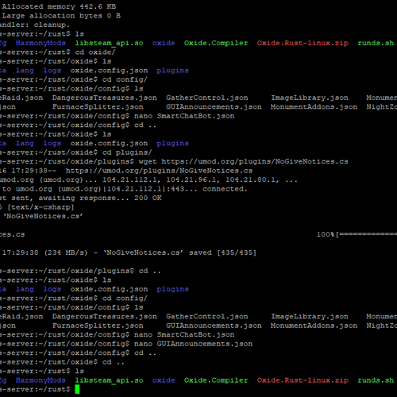
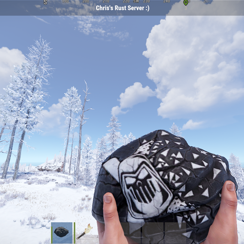
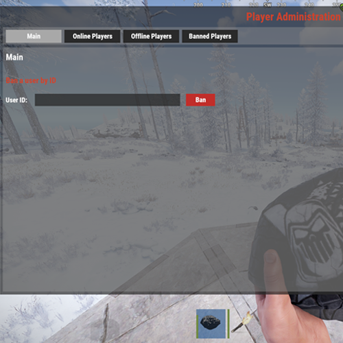
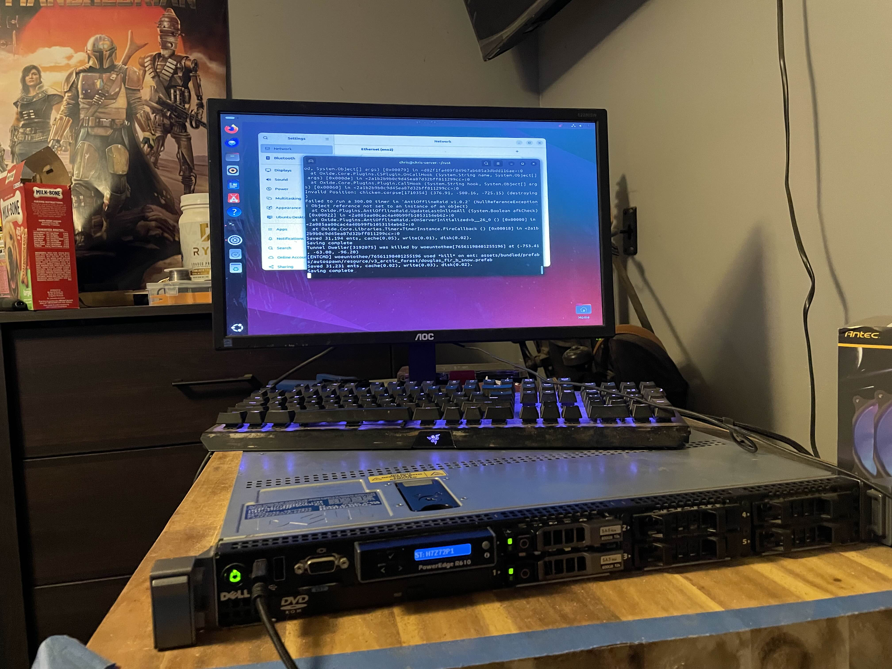

Rust Server
As a passionate server administrator, I successfully configured and managed a custom Rust server from the ground up. This project involved setting up and optimizing a Linux-based dedicated server to provide a seamless and engaging multiplayer experience for players.
Technical Skills Demonstrated:
- Linux Server Administration: Deployed and managed a dedicated Linux-based server, including software installation, process management, and resource monitoring for optimal performance.
- Networking and Security: Configured port forwarding, firewalls (UFW), and server query ports to ensure proper indexing in the Rust server list. Integrated a VPN for enhanced security, mitigating the risk of DDoS attacks and protecting the server's public-facing IP.
- Scripting and Automation: Customized configuration files and scripts to set gather rates, enable unique gameplay features, and implement automated in-game announcements to engage players.
- Game Modding: Installed and configured plugins and mods to introduce unique features such as nighttime zombies and scarecrow monsters, differentiating the server from others in the Rust community.
- Real-Time Server Management: Leveraged RCON tools for administrative tasks, including spawning entities, managing events, and troubleshooting player issues in real time.
- Performance Optimization: Balanced server settings such as gather rates and resource scaling to enhance the player experience while maintaining gameplay fairness.
- Problem Solving: Troubleshot complex server indexing issues, misconfigured query ports, and resource discrepancies, ensuring seamless gameplay and accessibility.
I decided to use Ubuntu Desktop OS instead of Ubuntu Server due to the fact that I do use this server for other purposes that require a UI.